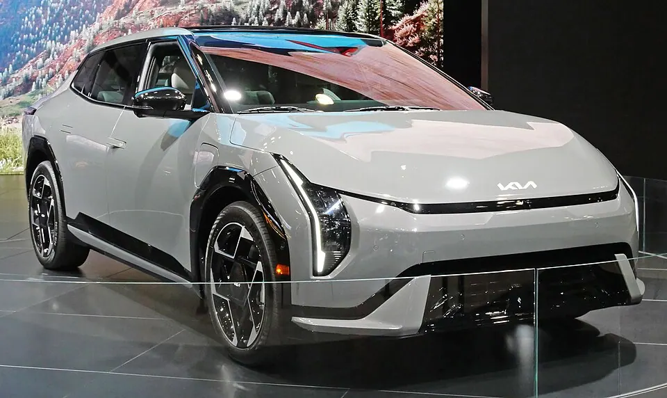

복합전비
4.5–5.8 km/kWh. 휠·구동·세부 사양이 다르면 같은 모델도 값이 달라집니다.
기아 · CT1
기본형·항속형과 17·19인치, 2WD·4WD, GT 사양의 전비와 주행거리를 비교합니다. 충전단가는 사용자가 직접 정합니다.

2WD 17인치 사양이 높은 전비를 보이고 4WD·GT로 갈수록 수치가 낮아집니다. 기본형과 항속형은 배터리 조건이 다르므로 전비와 주행거리를 함께 봐야 합니다.
막대는 동력 방식별 최고 복합연비 또는 전비의 위치를 보여 줍니다. 숫자에는 등록 사양 범위를 함께 표시합니다. km/L와 km/kWh는 단위가 달라 서로 길이를 비교하지 않습니다.
공식 등록 행 가운데 연비 범위와 세금 계산 가능 여부가 드러나는 사양을 추렸습니다. 값이 없는 칸은 다른 사양에서 가져와 채우지 않았습니다.
| 공식 등록 사양 | 동력 | 복합 | 도심 | 고속 | 1회 주행 | 연 자동차세 | 2만km 에너지비 |
|---|---|---|---|---|---|---|---|
| EV4(CT1) 기본형 2WD 17인치 빌트인캠 통합 | 전기 | 5.8 km/kWh | 6.2 | 5.3 | 382km | 130,000원 | 충전단가 입력 |
| EV4(CT1) 기본형 2WD 19인치 빌트인캠 통합 | 전기 | 5.4 km/kWh | 5.7 | 5 | 354km | 130,000원 | 충전단가 입력 |
| EV4(CT1) GT 빌트인캠 통합 | 전기 | 4.5 km/kWh | 4.6 | 4.3 | 425km | 130,000원 | 충전단가 입력 |
자동차세는 비영업용 승용 신차 정상세액과 지방교육세 30%를 합산했습니다. 연납·차령 경감·개별 감면은 제외합니다. 전기차 충전비는 이용 요금 차이가 커 기본값을 만들지 않습니다.
4.5–5.8 km/kWh. 휠·구동·세부 사양이 다르면 같은 모델도 값이 달라집니다.
130,000원. 실제 고지액은 등록 시점과 차령에 따라 달라질 수 있습니다.
내연기관은 거리 ÷ 복합연비 × 오피넷 단가로 계산합니다. 전기차는 실제 충전단가를 입력해 계산합니다.